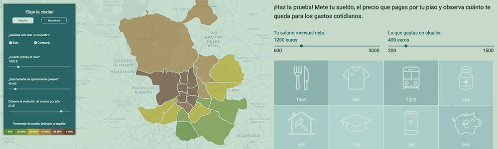
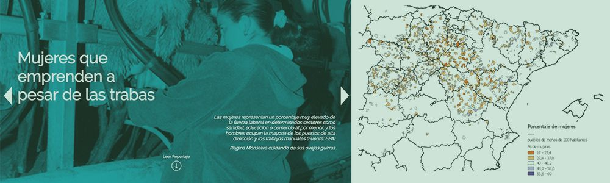
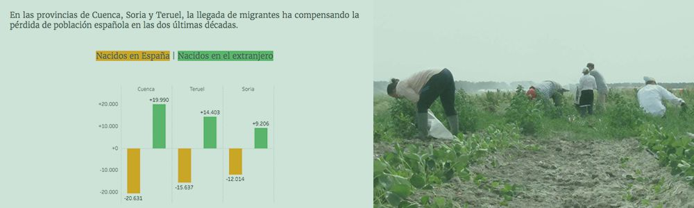
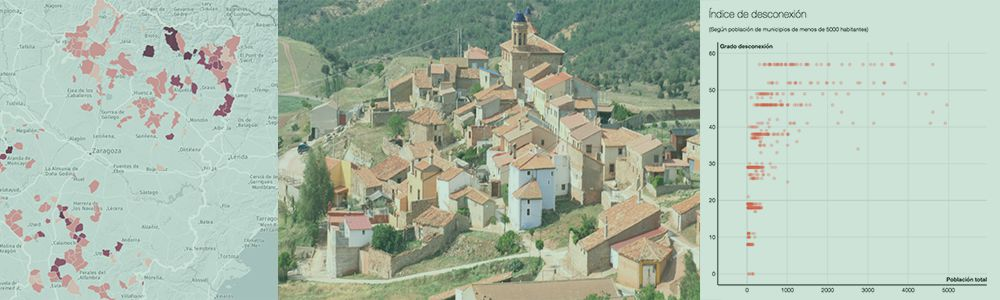
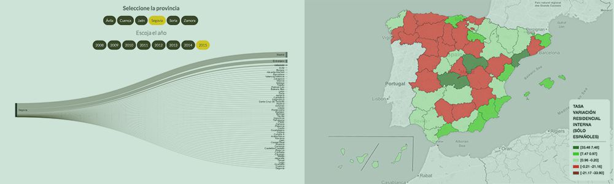
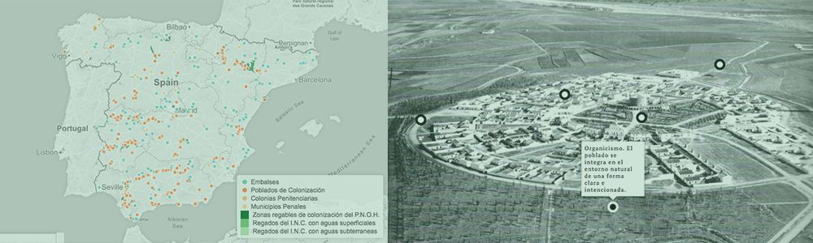
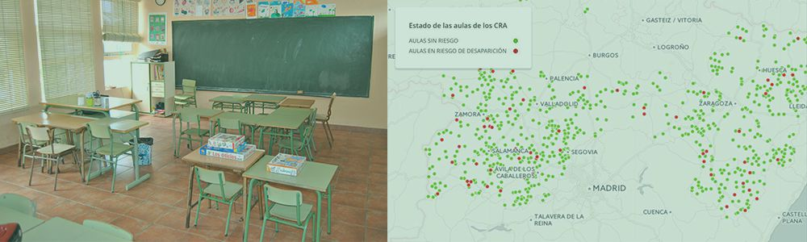
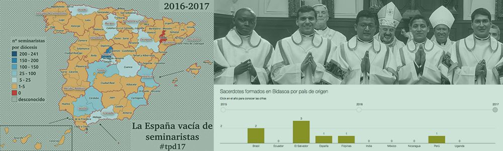
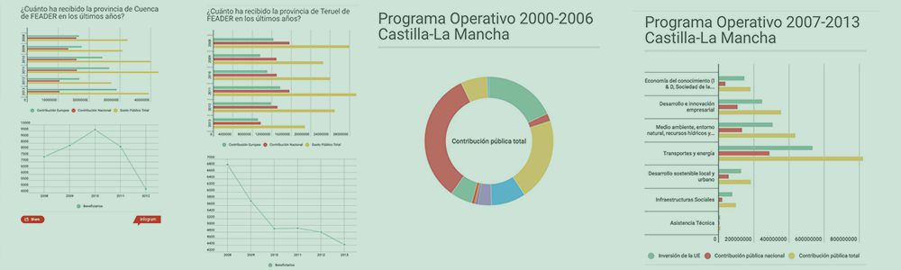

El precio del alquiler en Madrid y Barcelona ha crecido en el último año a un ritmo mucho mayor que los salarios. Gentrificación, pisos turísticos, especulación. ¿Qué hay detrás de la subida de los precios?

El 95% de los pueblos por debajo de los 200 habitantes tienen minoría de mujeres en edad de trabajar. Esta enorme disparidad influye negativamente en la sostenibilidad de la vida en los nucleos rurales.

La población en la España Vacía creció un 7% en los últimos años. El dato más revelador es que la totalidad de esos nuevos habitantes son personas que han nacido fuera de nuestro país.

Los habitantes de Fombuena, Fanlo y Purujosa no tienen escuelas, ni centros de salud, ni farmacias, ni paradas de autobús a menos de 30 minutos en coche. Tres historias que surgen gracias al índice de desconexión creado para este proyecto

Uno de los estereotipos que retratan a los españoles es su escasa movilidad. ¿Qué ocurrió durante los años de crisis? ¿Nos obligó a desplazarnos? ¿O nos movimos menos? ¿Qué territorios expulsaron a más gente y cuáles recibieron?

Modernización agrícola, recalificaciones encubiertas, arquitectura de vanguardia y trabajo esclavo se mezclan en varias historias sobre la colonización interior durante la dictadura franquista.

Los Centros Rurales Agrupados fusionan colegios que no tienen estudiantes suficientes todos los cursos. En Castilla y León y Aragón, 125 escuelas que forman parte de CRA están próximas al mínimo de alumnos que las condenaría al cierre.

Desde el año 2001 nuestro país ha perdido 523 seminaristas matriculados. En España hay 19.000 curas y la mitad de ellos supera los 64 años. La cifra es insuficiente para llevar a cabo un cambio generacional.

Aragón, Castilla-La Mancha y Castilla y León han recibido buena parte de los fondos europeos para el desarrollo regional durante los últimos 17 años. ¿Cómo se reparten y por qué es tan difícil seguir el rastro de su utilización real?
